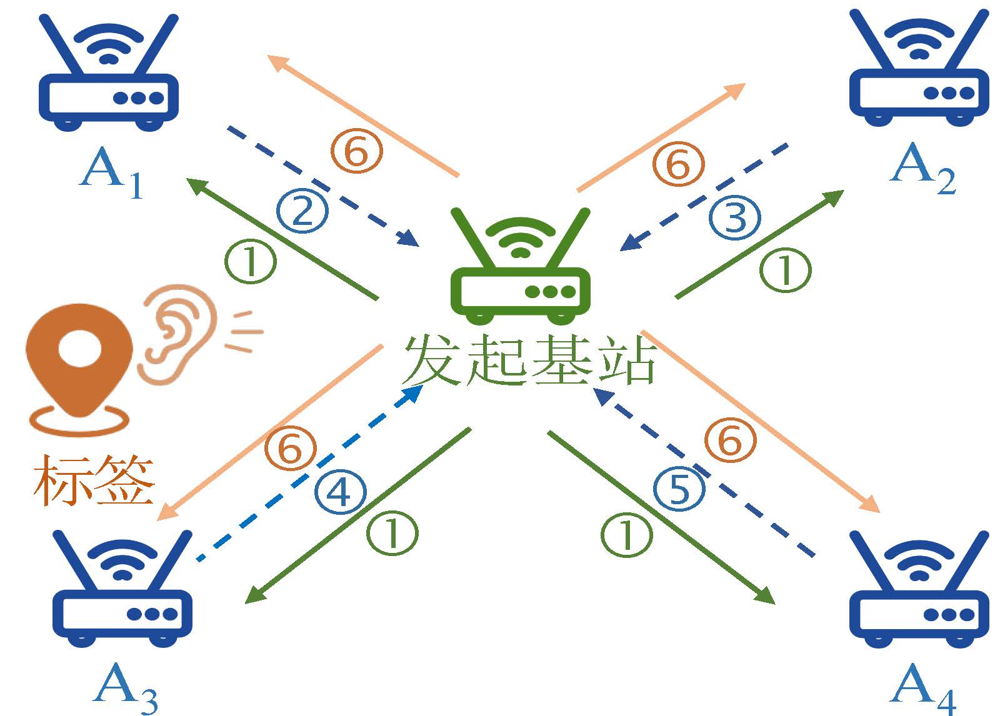
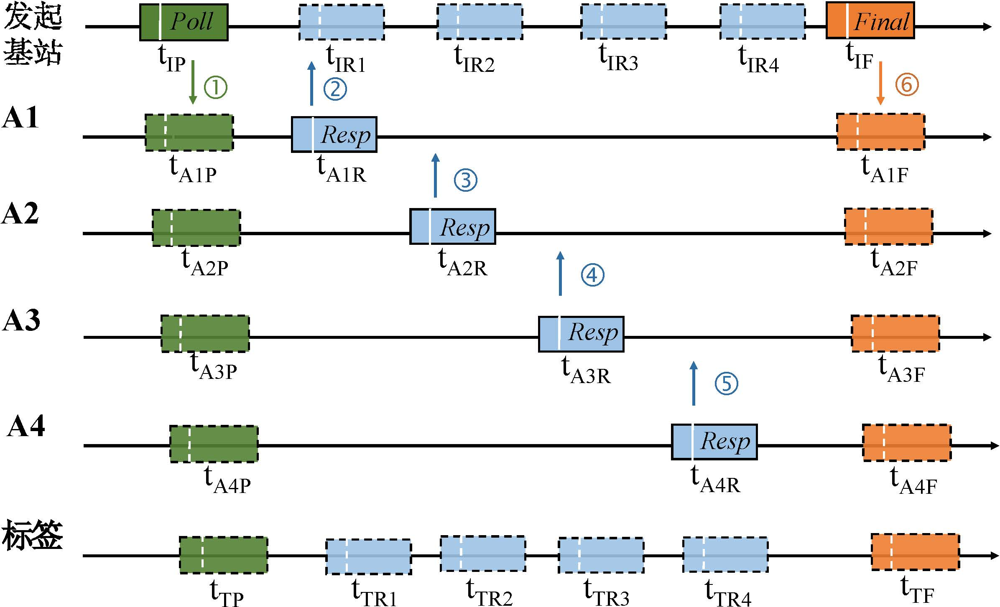

V-TWR Algorithm
We first introduce the communication architecture of the system, and then describe how high-precision tag localization is achieved under this architecture—i.e., the specific design of the V-TWR algorithm.


Communication Architecture
The left side of the figure above illustrates the system’s communication architecture.
In this architecture, base stations employ the DS-TWR method for redundant communication and ranging. Tags remain in a passive listening state: during base station ranging, they receive the response packets exchanged among base stations. Additionally, one special base station—termed the initiator base station—is designated to initiate the entire system communication sequence and orchestrate the ranging processes with other base stations.
The complete data communication process is shown on the right side of the figure above. The initiator base station first broadcasts a “Poll” packet; subsequently, base stations \(A_1\) through \(A_4\) reply sequentially with “Resp” packets; finally, the initiator base station broadcasts a “Final” packet. Thus, a DS-TWR ranging process is established between the initiator base station and each of the other base stations, and their respective time-of-flight (ToF) values can be computed using the standard DS-TWR formula. During this entire process, the tag receives a total of six packets. Because the tag operates in a passive-reception mode, system capacity is unaffected by the number of tags. In other words, the system can theoretically support an unbounded number of tags—achieving high scalability. Next, we describe how high-precision tag localization is realized within this framework.
Algorithm Design
For clarity, this section first labels the data collected during system communication and their corresponding timestamps.
As shown in the right-side figure above, \(t_{P}\) and \(t_{F}\) denote the times at which the initiator base station transmits the “Poll” and “Final” packets, respectively; \(t_{R_i}\) denotes the time at which the initiator base station receives the “Resp” packet from the \(i\)-th base station. Similarly, \(t'_{P}\) and \(t'_{F}\) denote the times at which the tag receives the “Poll” and “Final” packets from the initiator base station, respectively; \(t'_{R_i}\) denotes the time at which the tag receives the “Resp” packet from the \(i\)-th base station.
In the above notation, \(i \in \{1,2,3,4\}\), where \(N = 4\) is the number of auxiliary base stations.
Since the initiator base station embeds its locally recorded timestamps into the “Final” packet, the tag acquires all twelve timestamp values listed above throughout the process.
Hence, the objective of the V-TWR algorithm is to localize the tag using these twelve timestamps.
It is worth noting that the V-TWR algorithm generalizes naturally to any number of base stations; here, we illustrate it using five base stations (one initiator plus four auxiliaries).

Intuitively, to achieve high-precision ranging and localization, the V-TWR algorithm fully exploits the redundant data exchanged among base stations. To this end, V-TWR introduces the concept of virtual ranging.
Specifically, the core idea of V-TWR is to generate a virtual “Resp” packet at the tag and transmit it to the initiator base station. This establishes a virtual DS-TWR ranging process between the tag and the initiator base station.
We illustrate this using the initiator base station \(A_0\) and auxiliary base station \(A_1\).
As shown in the figure above, \(A_0\) and \(A_1\) still communicate and range via the standard DS-TWR method, with all relevant timestamps explicitly marked.
Suppose the tag transmits a virtual message to \(A_0\) at time \(t'_v\), and \(A_0\) receives it precisely at time \(t_v\). This assumption is reasonable, provided an appropriate value of \(t'_v\) is selected.
Thus, a virtual DS-TWR ranging process is formed between the tag and \(A_0\).
Based on the virtual timestamps \(t'_v\) and \(t_v\), their time-of-flight is computed as:
Because \(t'_v\) is unknown, \(\Delta t_v\) cannot be directly computed and is therefore termed the virtual time-of-flight. To solve for \(\Delta t_v\), the V-TWR algorithm must derive \(t'_v\).
V-TWR leverages the physical geometry among devices to perform this derivation. Denote the distance between the tag and the initiator base station \(A_0\) as \(d_0\), the distance between the tag and base station \(A_1\) as \(d_1\), and the distance between \(A_0\) and \(A_1\) as \(d_{01}\). Then the following relationships hold:
$$ t_{TR1}=t_{A1R}+\frac{d_{T \to A}}c \ t_{IR1}=t_{A1R}+\frac{d_{I \to A}}c \ t_{IR1}={t}{TR1}' +\frac{d}}c \tag{2
$$
where \(c\) is the speed of electromagnetic waves. From these three equations, we obtain the relationship between the virtual timestamp \(t'_v\) and the known quantities \(t_P\), \(t_{R_1}\), \(t'_P\), and \(t'_{R_1}\):
Substituting Equation \((3)\) into Equation \((1)\) and eliminating \(t_v\) yields:
where \(K_i\) and \(L_i\) are computed as follows:
It is readily observed that, for a fixed pair consisting of the initiator base station \(A_0\) and the tag, \(K_i\) is constant, whereas \(L_i\) varies with the choice of auxiliary base station. For example, if \(A_1\) is replaced by \(A_2\), the value of \(L_i\) changes accordingly.
Since Equation \((4)\) contains two unknowns—\(d_0\) and \(d_i\)—the tag’s position remains unsolvable from a single equation. However, this equation reveals a functional relationship between the two unknowns \(d_0\) and \(d_i\); one may naturally ask: what utility does this relationship provide?
We observe that, for auxiliary base stations other than the initiator, \(d_0\) (i.e., the distance between the tag and the initiator base station) can be reasonably assumed invariant. Because the entire communication sequence completes within just a few milliseconds to tens of milliseconds, assuming \(d_0\) remains constant over this brief interval is justified. Consequently, the V-TWR algorithm jointly utilizes multiple auxiliary base stations to solve for the unknowns and thereby determine the tag’s position.
For auxiliary base stations \(A_1\) through \(A_4\), Equation \((4)\) and Equation \((5)\) can be reformulated as (for \(i = 1,2,3,4\)):
where \(K_i\) remains unchanged and is computable via Equation \((5)\).
Subtracting the result for \(A_1\) from that for \(A_2\), and rearranging terms, yields:
The left-hand side, \(d_2 - d_1\), equals the difference between the distances from the tag to \(A_2\) and to \(A_1\), while the right-hand side consists entirely of known quantities. Thus, given the recorded timestamps and the known inter-base-station distances, we can compute the distance difference between the tag and any two auxiliary base stations.
Similarly, \(d_3 - d_1\) and \(d_4 - d_1\) are computed as:
With these three distance-difference measurements, the tag’s position can be solved using classical localization algorithms.
Specifically, two methods are employed to solve for the tag’s position: (i) a hyperbolic positioning algorithm, and (ii) a search-based nonlinear least-squares algorithm.
The hyperbolic algorithm locates the tag by computing the intersection point(s) of hyperbolas. Theoretically, the tag lies on a hyperbola whose foci are two base stations. Given multiple such base-station pairs, the tag’s location corresponds to the intersection of multiple hyperbolas. We adopt the classical Chan algorithm to solve this problem. The Chan algorithm assumes measurement noise follows a zero-mean Gaussian distribution and solves the resulting hyperbolic equations non-recursively. Hence, it achieves reasonably accurate results with low computational overhead.
The search-based nonlinear least-squares algorithm operates as follows: given a candidate position \(\mathbf{x} = (x, y, z)\) and the known positions of base stations \(\mathbf{p}_i = (x_i, y_i, z_i)\) (where \(i = 1,2,\dots,N\), and \(N\) is the number of base stations), the distance difference between the tag and base stations \(i\) and \(1\) is computed as:
Given measured distance differences \(\hat{d}_i - \hat{d}_1\), the algorithm solves for the tag’s position \(\mathbf{x}\) by minimizing the residual between computed and measured values:
This algorithm typically requires searching a large solution space to find the optimal result, enabling high accuracy at the cost of substantial computational overhead.
Considering the complementary strengths of these two algorithms—the Chan algorithm delivers a coarse but fast estimate, whereas the search-based nonlinear least-squares algorithm achieves high accuracy at high computational cost—we combine them to balance localization accuracy and runtime efficiency. Specifically, we first apply the Chan algorithm to rapidly obtain a coarse candidate position; then, within a small neighborhood around this candidate (e.g., a \(1\,\text{m} \times 1\,\text{m} \times 1\,\text{m}\) volume), we perform a refined search using the nonlinear least-squares algorithm to obtain a more precise position estimate.
In summary, the V-TWR algorithm first computes distance-difference measurements between the tag and multiple base stations; then, it applies the Chan algorithm and the search-based nonlinear least-squares algorithm to solve for the tag’s position—ultimately achieving high-precision tag localization.
Supplementary Remarks
We theoretically analyze the error characteristics of the V-TWR algorithm and prove that its localization error is of the same order of magnitude as that of DS-TWR, and significantly lower than that of TDOA-based methods. Thus, the dual objectives of high accuracy and high scalability are simultaneously achieved.
Furthermore, to enhance precision and robustness, we propose two optimization algorithms: (i) a ranging self-calibration optimization algorithm, and (ii) a base-station rotation optimization algorithm.
The ranging self-calibration optimization algorithm enables automatic ranging calibration, drastically reducing manual calibration effort and effectively mitigating UWB ranging bias.
The base-station rotation optimization algorithm eliminates overreliance on any single base station and, through simple link-quality assessment, improves resilience against NLOS effects.
All details above are elaborated in Reference [1].
References
- Yang J, Dong B S, Wang J L, "VULoc: Accurate UWB localization for countless targets without synchronization", ACM IMWUT 2022.